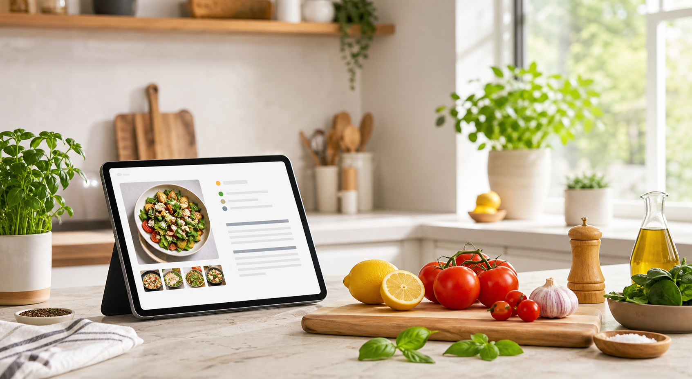

Heute kochen
Frische Ideen, klare Schritte, einfach lecker.
Finde einfache Rezepte für jeden Tag und jedes Event.
Tagestipps
Schnell auf den Teller
Wo geht es weiter?

Heute kochen
Finde einfache Rezepte für jeden Tag und jedes Event.
Tagestipps
Wo geht es weiter?